Эксплуатация сервиса
Гоголев Сергей
Зависимости

npm outdated
Находит устаревшие зависимости
$ npm outdated
Package Current Wanted Latest Location mocha 2.3.3 2.3.3 2.4.5 mocha nodemon 1.8.0 1.8.0 1.9.1 nodemon lodash 3.10.1 3.10.1 4.6.1 lodash supertest 1.1.0 1.1.0 1.2.0 supertest vow 0.4.11 0.4.12 0.4.12 vow-fs > vow
$ npm update

nsp check
Находит уязвимости в зависимостях
$ npm install -g nsp
$ nsp check --output summary
(+) 1 vulnerabilities found Name Installed Patched negotiator 0.5.3 >= 0.6.1 Path ... > express@3.21.2 > ... > negotiator@0.5.3 More Info https://nodesecurity.io/advisories/106
$ nsp check --output summary
(+) No known vulnerabilities found1 vulnerabilities found
Yarn
Не стабилен – нет мажорной версии
Параллельная установка
– в среднем в 2.5 раза быстрее
Фиксирует всё дерево зависимостей
# THIS IS AN AUTOGENERATED FILE. DO NOT EDIT THIS FILE DIRECTLY.
# yarn lockfile v1
JSONStream@^0.8.4:
version "0.8.4"
resolved "https://registry.yarnpkg.com/../JSONStream-0.8.4.tgz#91657df"
dependencies:
jsonparse "0.0.5"
Yarn
$ yarn add --dev bluebird
[1/4] 🔍 Resolving packages...
[2/4] 🚚 Fetching packages...
[3/4] 🔗 Linking dependencies...
[4/4] 📃 Building fresh packages...
success Saved lockfile.
success Saved 1 new dependency.
└─ bluebird@3.4.7
✨ Done in 3.85s.
$ yarn install # Использует уже зафиксированные версии
$ yarn outdated
$ yarn upgrade
Yarn vs npm: Everything You Need to Know
Tim Severien
Codestyle
|
vs | |
Использование let и const
const pi = 3.141592653589;
const e = 2.71828182;
const φ = 1.618033988;
for(let i = 0; i < 10; i++) {
console.log(i);
}
Вложенность блоков
if (user.isAuthorized) {
if (notes.length > 0) {
for(let i = 0; i < note.length; i++) {
console.log(notes[i]);
}
} else {
console.log('Notes not found!')
}
}
Цикломатическая сложность
function renderNotes(res, user, notes) {
if (!user.isAuthorized) {
res.sendStatus(403); // 1
} else if (notes) {
res.render('notes', notes); // 2
} else {
res.sendStatus(404); // 3
}
}Беcполезное code review
exports.list = function (req, res) { // Используй стрелочные
let notes = Note.findAll(); // Используй const
let data = { // И здесь
notes: notes,
meta: req['meta'] // Здесь можно так: req.meta
};
res.render('notes', data);
};
Codestyle помогает
Упростить чтение кода всей команды
Избежать конфликтов
Сделать ревью кода полезнее
Избежать типичных ошибок в коде
Сделать код качественнее
Codestyle.md
# Variable declaration
* Each variable should be declared:
* using a var statement;
* only once in the current scope;
* on a new line;
* as close as possible to the place
where it's first used.
* Each var statement should have only
one variable declared in it.
.editorconfig

.editorconfig
[*]
indent_size = 4
indent_style = space
[*.json]
indent_size = 2
Codestyle JavaScript
$ npm install --save-dev eslint
.eslintrc.json
{
"rules": {
"no-unused-vars": 0,
"max-len": [1, 100],
"max-params": [2, 3]
}
}
0 - Выключено
1 - Предупреждение
2 - Ошибка
eslint.org/docs/rules
.eslintrc.json
$ npm install --save-dev eslint-config-xo
{
"extends": "xo",
"rules": {
"max-len": [2, 79],
"max-params": [2, 3]
}
}
.eslintignore
build/
**/*.min.js
node_modules
Игнорирование правил
function onError(err, req, res, next) {
/* eslint no-unused-vars: 0 */
/* eslint max-params: [2, 4] */
res.sendStatus(500);
}
Проверка кода
$ node_modules/.bin/eslint .
/Users/gogoleff/Workspace/urfu-2016/notes-app-example/index.js 3:29 error Missing semicolon semi 20:34 error Missing semicolon semi
Автоматическое исправление
$ node_modules/.bin/eslint . --fix
ESLint ♥︎ Atom
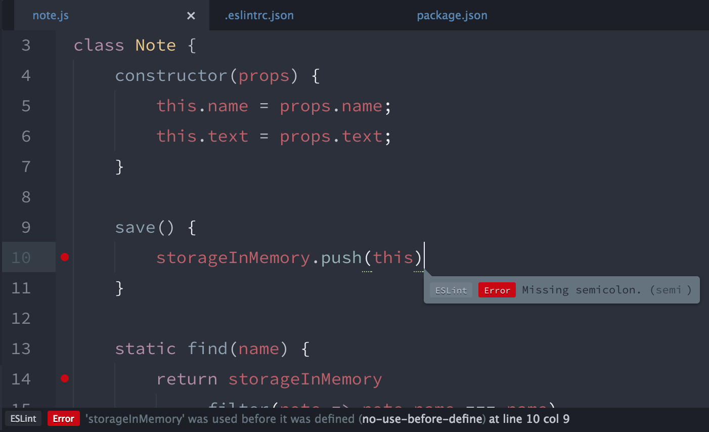Codestyle CSS
Stylelint + Stylefmt
$ npm install --save-dev stylelint
$ npm install --save-dev stylelint-config-standard
$ npm install --save-dev stylefmt
.stylelintrc.json
{
"extends": "stylelint-config-standard",
"rules": {
"color-hex-case": "lower"
},
"ignoreFiles": [
"build/*"
]
}
Скрипты
Скрипты
Запуск комплексных команд в виде простых запоминающихся алиасов к ним
Makefile
start:
node index.js
lint:
stylelint public/*.css
eslint *.js
test: lint
mocha test/$ make test
Building Web Software With Make
Mark McDonnell
Gulp
const gulp = require('gulp');
const eslint = require('gulp-eslint');
gulp.task('lint', () => {
gulp
.src('*.js')
.pipe(eslint())
});$ gulp lint
Building With Gulp
Callum Macrae
NPM Scripts
{
"name": "awesome-notes",
"dependencies": {
"mocha": "4.0.0"
},
"scripts": {
"test": "mocha test/",
}
}$ npm run test
NPM Scripts: Команды
{
"scripts": {
"clean": "rm -rf node_modules/"
}
}
Помним о мультиплатформе!
{
"devDependencies": {
"rimraf": "2.5.2"
},
"scripts": {
"clean": "rimraf node_modules/"
}
}
NPM Scripts: Последовательность команд
{
"scripts": {
"check:lint": "eslint .",
"check:test": "mocha test/",
"check": "npm run check:lint && npm run check:test"
}
}
{
"devDependencies": {
"npm-run-all": "1.5.2"
},
"scripts": {
"check:lint": "eslint .",
"check:test": "mocha test/",
"check": "npm-run-all check:lint check:test"
}
}
NPM Scripts: Параллельные команды
{
"scripts": {
"lint:css": "stylelint **/*.css",
"lint:js": "eslint .",
"lint": "npm run lint:css & npm run lint:js"
}
}
{
"scripts": {
"lint:css": "stylelint **/*.css",
"lint:js": "eslint .",
"lint": "npm-run-all --parallel lint:css lint:js"
}
}
NPM Scripts: Группы команд
{
"scripts": {
"lint:css": "stylelint **/*.css",
"lint:js": "eslint .",
"lint": "npm-run-all --parallel lint:*"
}
}
NPM Scripts: Настройки
{
"config": {
"report": "nyan"
},
"scripts": {
"test": "mocha test/ -R $npm_package_config_report"
}
}
NPM Scripts: Внешние скрипты
// scripts/favicon.js
const fs = require('fs');
const toIco = require('to-ico');
const logo = fs.readFileSync('logo.png');
toIco(logo)
.then(fs.writeFileSync.bind(fs, 'favicon.ico'));
{
"scripts": {
"favicon": "node scripts/favicon.js"
}
}
NPM Scripts: Аргументы
{
"scripts": {
"start": "node app/index.js",
}
}$ npm run start -- --mode=debug
$ node app/index.js --mode=debug
NPM Scripts
Advanced front-end automation with npm
Kate Hudson
How to Use npm as a Build Tool
Keith Cirkel
Деплой сервиса
Share machine
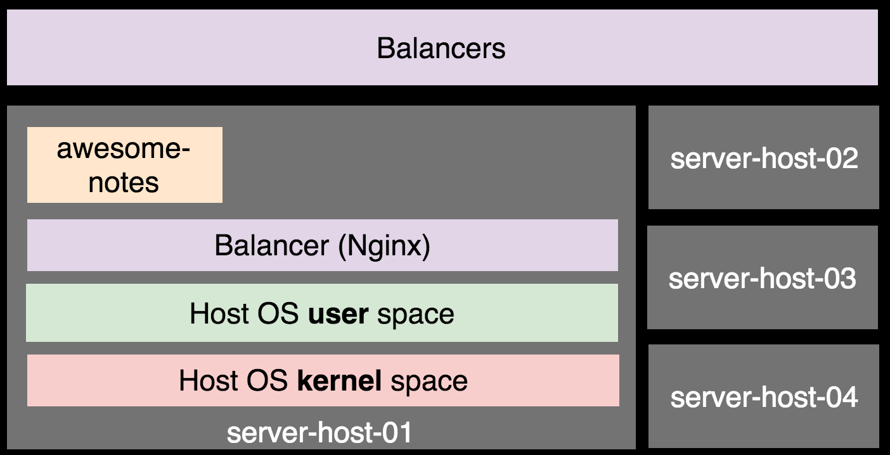 ftp, scp, rsync, debianShare machine
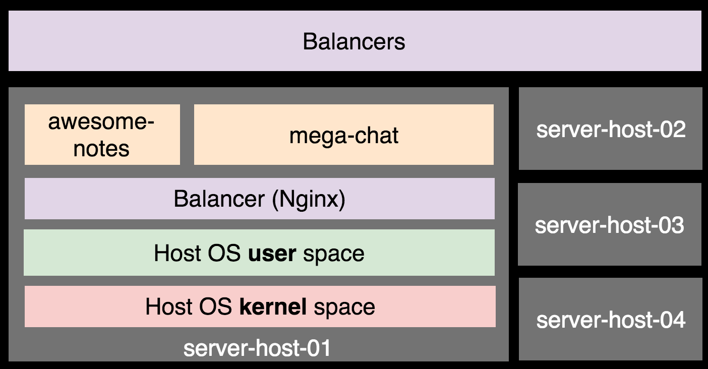 Конфликт за ресурсыVirtualization
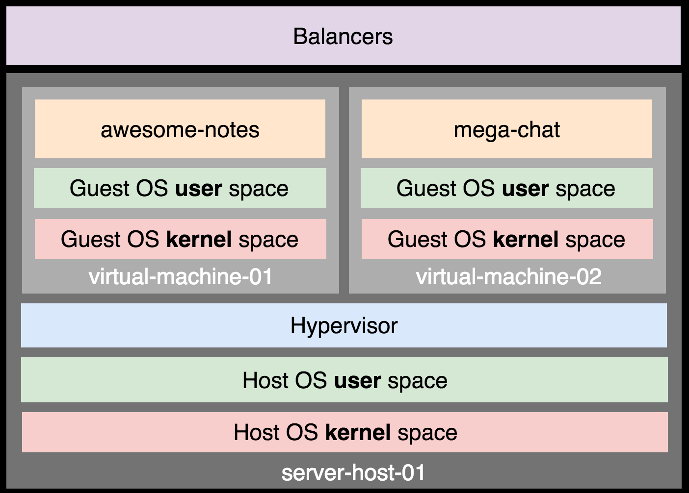Virtual machine
Эмуляция железной машиныПолная изоляция
Разделение ресурсов (CPU, memory, disk)
Тяжёлые на подъём
Требовательны к дисковому пространству
Virtualization
User space и Kernel space
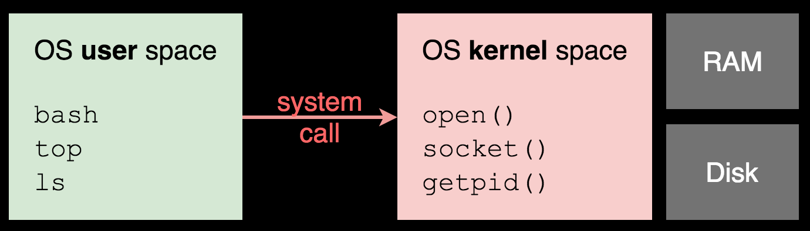Containers
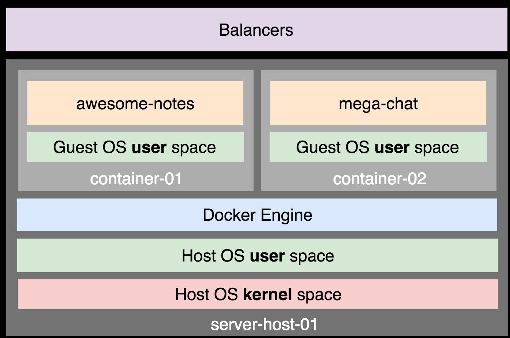Containers
Лёгкие на подъём
Экономят дисковое пространство
Изоляция уязвима
Привязаны к ядру одной OS

Docker: Простой процесс деплоя

Docker: Union File System
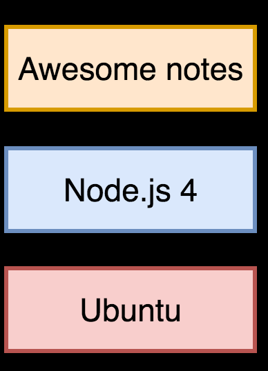Docker: Union File System
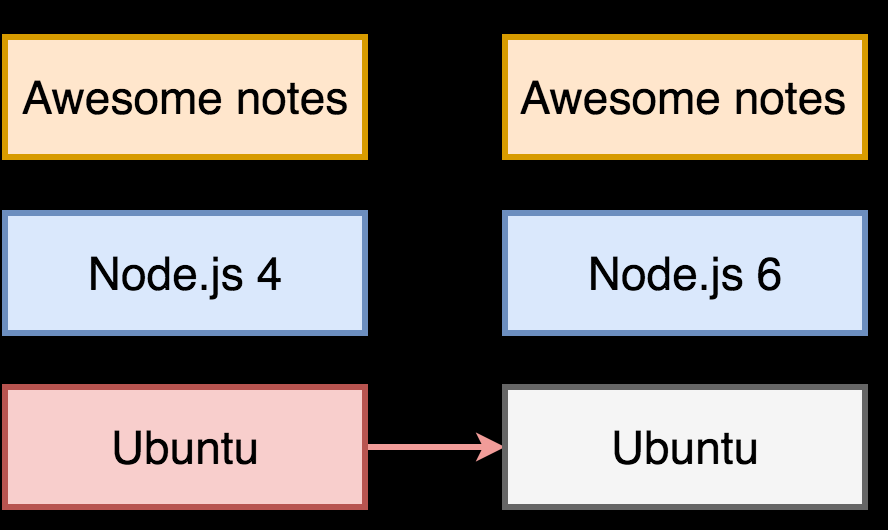Docker: Union File System
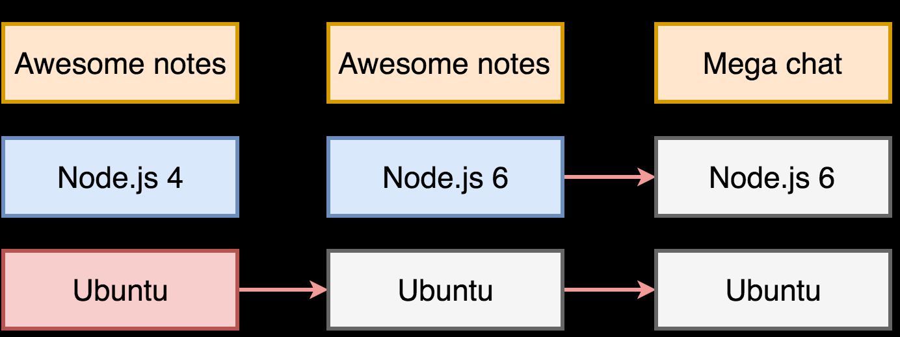Docker: Copy-on-write
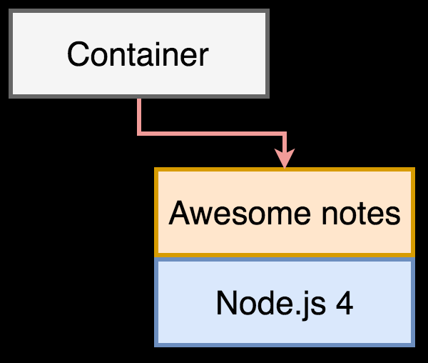Docker: Copy-on-write
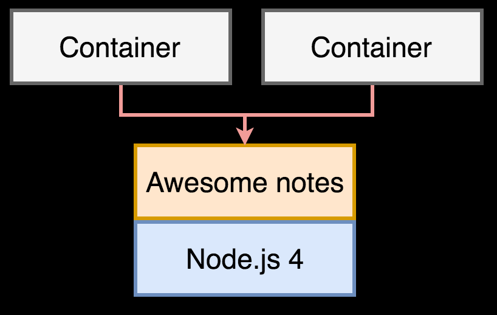Docker: Copy-on-write
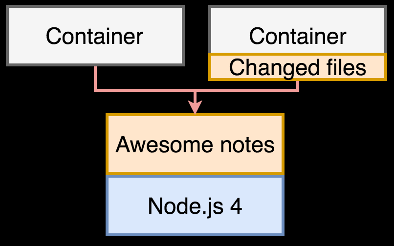Docker: Docker Hub
hub.docker.comГотовые образы для основы:
Ubuntu, Node.js, MySQL, Mongo

Now: устанавливаем
$ npm install -g now
Now: подготавливаем приложение
app/
└── index.js
package.json
app.listen(process.env.PORT || 8080)
Now: подготавливаем приложение
app/ └── index.js package.json Dockerfile
FROM node:6
COPY package.json /
COPY app /app
RUN npm i --production
ENV PORT 80
EXPOSE 80
CMD node app/index.js
Now: деплоим
$ now install --docker
> Ready! https://notes-app-example-bpehuootqx.now.sh [3s] > Upload [====================] 100% 0.0s > ... > ▲ docker build > ... > Step 6 : EXPOSE 80 > ---> 9459d27e483b > ---> Running in 5f2b53f95673 > Step 7 : CMD node app/index.js > ---> b07beb9eb1e2 > ---> Running in cb1f8e626245 > Successfully built 777656ec62fc > ▲ Storing image > ▲ Deploying image > ▲ Container started > Server started on 80 > Deployment complete!

Heroku: устанавливаем
Heroku CLI$ heroku login
$ heroku help
Heroku: подготавливаем приложение
app/ └── index.js package.json
{
"engines": {
"node": "6.5.0"
}
}
Heroku: подготавливаем приложение
app/
└── index.js
package.json
app.listen(process.env.PORT || 8080)
Heroku: подготавливаем приложение
app/ └── index.js package.json Procfile
web: node app/index.js
Heroku: проверяем локально
$ heroku local web
5:24:52 PM web.1 | Server started on 5000 5:25:12 PM web.1 | GET / 200 33.687 ms - 893 5:25:20 PM web.1 | POST /notes 302 27.246 ms - 56 5:25:20 PM web.1 | GET /notes 200 7.074 ms - 943
Heroku: деплоим
$ heroku create urfu2016-notes
Creating ⬢ urfu2016-notes... done https://urfu2016-notes.herokuapp.com/ | https://git.heroku.com/urfu2016-notes.git
Heroku: деплоим
$ git push heroku master
remote: Compressing source files... done. remote: Building source: remote: remote: -----> Using set buildpack heroku/nodejs remote: -----> Node.js app detected remote: remote: -----> Creating runtime environment remote: remote: NODE_ENV=production remote: NODE_MODULES_CACHE=true remote: remote: -----> Installing binaries remote: engines.node (package.json): 4.4.0urfu2016-notes.herokuapp.com
Heroku: управляем
$ heroku restart
$ heroku logs
$ heroku ps:scale web=1:Free
$ heroku ps:scale web=2 Scaling dynos... ! ▸ Cannot update to more than 1 Free size dynos per process type
Docker и Heroku
A Beginner-Friendly Introduction to Containers, VMs and Docker
Preethi Kasireddy
Architecting Containers
Scott McCarty
Heroku Architecture
devcenter.heroku.com
Деплой статики
Статика
Файлы изображений, иконок, стилей.
Не требуют вычислительный ресурсов.
app/ └── index.js └── routes.js └── models └── controllers └── views └── public └── styles.css └── logo.png
Проблема
Разместить статику ближе к пользователю
Решение
Content Delivery Network
Content Delivery Network
Географически распределённая сетевая инфраструктура


Content Delivery Network
Unicast
One Machine, One IP
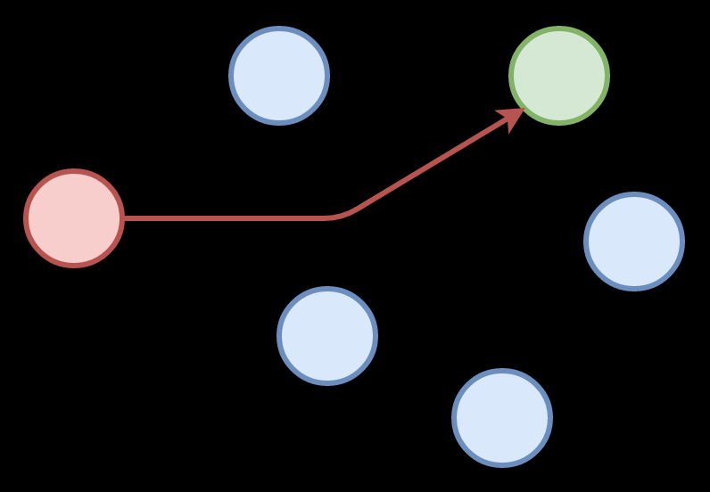Anycast
Many Machines, One IP
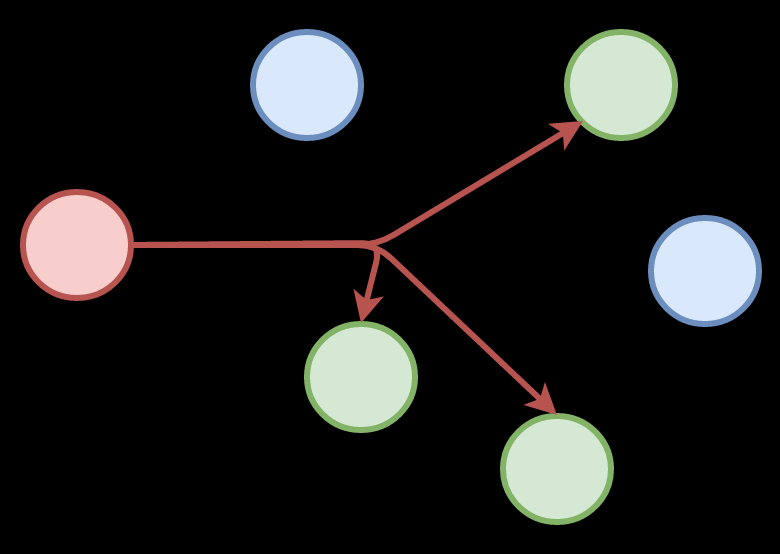Border Gateway Protocol
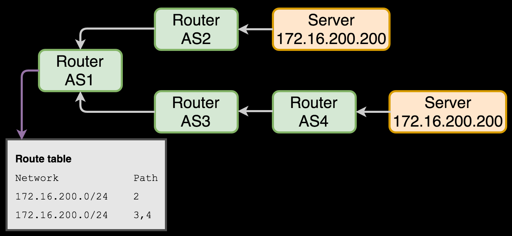Content Delivery Network
Размещение статики ближе к пользователю
Кеширование
Сжатие текстовой статики (gzip):
html, css, js, json, ...
Обеспечение 100% доступности
Content Delivery Network
Количество точек присутствия
Point of Presence
Политика кеширования
Политика устаревания
API
Surge
$ npm install --save-dev surge
$ surge -p ./public -d urfu2016-notes.surge.sh
Surge
Surge - surge.sh
email: email@example.com
token: *****************
project path: ./app/public
size: 3 files, 19.2 KB
domain: urfu2016-notes.surge.sh
upload: [====================] 100%, eta: 0.0s
propagate on CDN: [====================] 100%
plan: Free
users: email@example.com
Success! Project is published and running at urfu2016-notes...
Surge
<!DOCTYPE html>
<html lang="en">
<head>
<meta charset="utf-8">
<title>{{ title }}</title>
<link rel="stylesheet" href="/styles.css">
<link rel="stylesheet"
href="https://urfu2016-notes.surge.sh/styles.css">
</head>
<body>
{{> notes }}
</body>
</html>
Как работает кеширование
Первый ответ от Surge
HTTP/1.1 200 OK
Cache-Control: public, max-age=31536000, no-cache
Content-Type: text/css; charset=UTF-8
ETag: d1d3c5c4cdb2568785ba1a366b7fb048
Server: SurgeCDN/0.12.2
body {
font-family: Arial, sans-serif;
}
Как работает кеширование
Повторный запрос браузера
GET /styles.css HTTP/1.1
Host: urfu2016-notes.surge.sh
If-None-Match: d1d3c5c4cdb2568785ba1a366b7fb048
Если ETag равен If-None-Match,
то ответ от Surge будет очень коротким
HTTP/1.1 304 Not Modified
Content Delivery Network
Знакомство с Content Delivery Network
Webzilla
What is Anycast and How it works
Sarath Pillai
Content Delivery Networks
Rajkumar Buyya
Continuous Integration
Continuous Integration
Автоматизиция сборки, тестирования и деплоя исходного кода по факту его изменения
Continuous Integration
Автоматизация рутины
Неизбежное тестирование кода
Быстрая доставка до конечного пользователя

Travis: инициализация
Скачиваем клиент Travis CLI
$ travis login$ travis init node_js
.travis.yml file created!
urfu-2016/notes-app-example: enabled :)
language: node_js
node_js:
- '0.11'
- '0.10'Travis: cборка и проверка кода
language: node_js
node_js:
- '6'
install:
- npm install
before_script:
- npm run lint
Travis: деплой сервиса
$ travis setup heroku
Deploy only from urfu-2016/notes-app-example? |yes| yes
Encrypt API key? |yes| yes
deploy:
provider: heroku
api_key:
secure: HDS9M8xVVa6NyI9QV1ZDvW4Xp+...
app: urfu2016-notes
on:
repo: urfu-2016/notes-app-exampleTravis: деплой статики
$ travis env set SURGE_LOGIN user@example.com
$ travis env set SURGE_PASSWORD my_secure_password
[+] setting environment variable $SURGE_LOGIN
language: node_js
# ...
after_success:
- '["${TRAVIS_PULL_REQUEST}" = "false"] && npm run deploy:surge'
Cервис «Заметки»
Репозиторий
github.com/urfu-2016/notes-app-example
Адрес в Heroku
urfu2016-notes.herokuapp.com
Адрес в Now
notes-app-example-bpehuootqx.now.sh